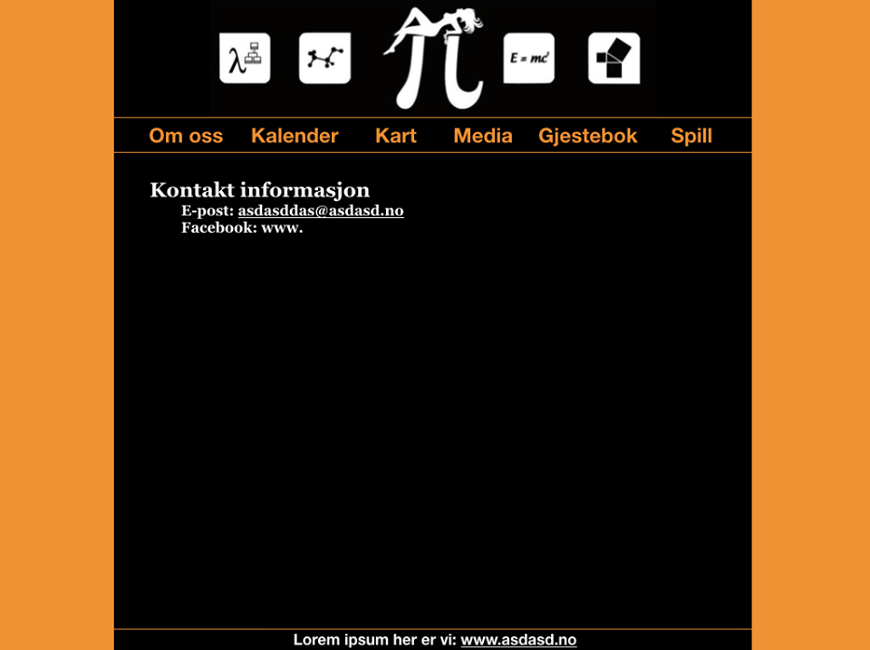

Administrative Details
- Client Name: Realfagskjelleren
- Contact Person: Andreas F. Eikeland, the leader of Realfagskjelleren

Purpose, Goals and Audience
The purpose of the website is to serve as a informationhub for Realfagskjelleren. Its main goal is to accessibly provide answers to questions students might have about Realfagskjelleren, and secondly also promote Realfagskjelleren and its interests. The targeted audience of this is mainly students
Navigation Structure
We choose a clique based structure for the navigation of Realfagskjellerens website, as seen in figure 1. Every page is reachable from the homepage through a menu on top. We thought this structure would minimize the time the user has to spend navigating from one page to the next.

Page Layout and Appearance
- General page layout
- Navbar
- Fonts
- Color Scheme
- Links
- Links
- Links
All our different html pages will be built in a similar fashion. On the right and left side there will be margins each taking 20% of the webpage width. At the top, and centered within the margins, we will have a custom made banner for Realfagskjelleren. Directly beneath the banner we have a navbar, also centered within the margins. The remaining place on the page is where the specific content for each site will be. The following mockup image illustrates the general layout
The navigation bar, or navbar, will be used for all our different html pages and will stay the same for To be mobile friendly we decided to use semi-large buttons for the navbar. .
We decided to go for Georgia as our main font, while our figures and paragraphs use Computer Modern. For both fonts we use Sans-sarif as our background.
The official color scheme for Realfagskjellern is orange TODO: links, shadows, borders
A short page with contact information of a select few individuals
Content
Our initial plan is to use Github to host the site, as each person is allowed to host one simple website. There is currently no further plan for a future location
Minimum Requirements
We would like to have a calendar of which events Realfagskjelleren will be hosting. These are added on google calendar, however this is also used to schedule meetings and etc. Thus, one challenge will be to extract the correct events.
Plan
Organizational Scheme
- Homepage.html
- Contact.html
- Events
- Map.html
- Pictures.html
- Games.html
- “Finn toeren”
- 4 chan
- Terning
- Scripts
- Map.js
- games_finn_toeren.gjs
- games_4chan.js
- games_terning.js
- events.js
We would like to have a calendar of which events Realfagskjelleren will be
hosting. These are added on google calendar, however this is also used to
schedule meetings and etc. Thus, one challenge will be to extract the correct
events.
- Homepage.html
- Contact.html
- Events
- Map.html
- Pictures.html
- Games.html
- “Finn toeren”
- 4 chan
- Terning
- Scripts
- Map.js
- games_finn_toeren.gjs
- games_4chan.js
- games_terning.js
- events.js
We would like to have a calendar of which events Realfagskjelleren will be hosting. These are added on google calendar, however this is also used to schedule meetings and etc. Thus, one challenge will be to extract the correct events.